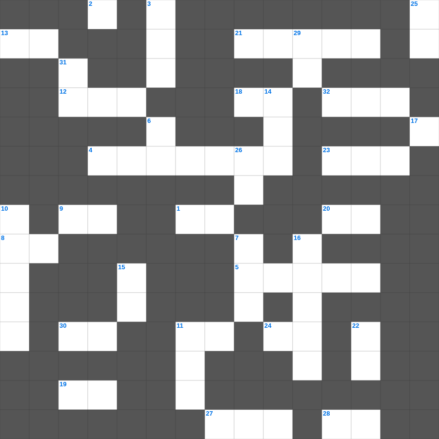

성경 속 치유의 기적
📌 서비스 정의
십자가로세로는 교회 주보와 주일학교에서 사용할 수 있는 성경 기반 가로세로 퍼즐 서비스입니다. 성경 인물, 사건, 핵심 구절을 바탕으로 제작되었습니다. 온라인 풀이 및 인쇄 기능을 제공합니다.
📖 이 글은 어떤 내용인가요?
예수님은 사역 기간 동안 많은 병자들을 고치셨습니다. 중풍병자, 혈루증 여인, 시각장애인, 나병환자 등 다양한 사람들이 예수님의 손길을 통해 치유받았으며, 이는 단순한 육체적 회복을 넘어 하나님 나라가 임했음을 보여주는 표적이었습니다. 이 퍼즐은 예수님의 치유 사역을 통해 그분의 능력과 사랑을 살펴봅니다.
📚 핵심 포인트
중풍병자를 고치심 · 혈루증 여인의 믿음 · 시각장애인의 눈을 뜨게 하심 · 나병환자를 깨끗하게 하심 · 죽은 자를 살리심
무료로 즐기는 성경 성경 주일학교 퀴즈! 35개의 힌트로 구성된 가로세로 낱말 퍼즐입니다. PC와 모바일 모두 지원되며, 정답을 바로 확인할 수 있어 혼자서도 쉽게 풀 수 있습니다.

📝 가로 힌트
1. 제물을 통째로 태워 드리는 제사
2. 의인의 간구는 역사하는 이것이 큼이니라
4. 그리스도의 재림과 종말에 관한 가르침
5. 우리가 거할 영원한 집
8. 예수님이 우리 죄를 대신해 돌아가심
9. 수고하고 무거운 짐진 자들아 다 내게로 이것
11. 여섯째 날 마지막에 만드신 존재
12. 용서할 때 일흔 번씩 몇 번까지?
13. 죽음에서 다시 살아나심
18. 혼인 잔치에 이것을 입지 않은 사람
19. 에덴의 동쪽으로 쫓겨난 인류
20. 여호와 이것: 평강의 하나님
21. 언약궤 안에 들어있는 아론의 물건
23. 솔로몬 성전 건축에 쓰인 고급 나무
24. 하나님이 인간을 만드실 때 불어넣으신 것
27. 하나님의 보좌 앞 일곱 등불
28. 새 예루살렘 성곽의 첫 번째 기초석
30. 성령의 9가지 열매 중 두 번째
32. 예수님이 무화과나무를 저주하신 곳 근처
📝 세로 힌트
3. 출애굽을 기념하는 이스라엘 최대 절기
5. 공중에 나는 이것(다섯째 날)
6. 양 떼를 치는 감독자
7. 베드로와 안드레의 고향
10. 아브라함이 떠난 고향
10. 아브라함의 고향
11. 이스라엘이 광야에서 보낸 년수
14. 마태, 마가, 누가, 요한복음
15. 기드온의 300 용사가 든 것: 항아리와 이것
16. 엘리야에게 떡을 대접한 사르밧 과자
17. 공의를 마르지 않는 이것 같이 흐르게 하라
22. 이스라엘 백성이 광야에서 처음 진을 친 곳
25. 예배의 시작을 알리는 종소리나 기도
26. 민족이 민족을 나라가 나라를 대적하여 이것이 일어남
29. 고라 자손의 반역 때 땅이 갈라짐
31. 예수 그리스도는 어제나 오늘이나 영원토록 이것하시니라
🧑🏫 교회 교육 자료 활용
이 퍼즐은 주일학교 교재 추천 자료로 활용할 수 있고, 주일학교 주보에 넣기 좋은 분량으로 구성되어 있습니다. 수업용 주일학교 교안에 활동지로 붙이거나, 예배 후 복습용 주일학교 공과교재로 바로 사용할 수 있습니다.
🏷️ 키워드
성경 주일학교 퀴즈, 성경, 십자가로세로, 성경퀴즈, 말씀퀴즈, 가로세로퍼즐, 주일학교 교재 추천, 주일학교 주보, 주일학교 교안, 주일학교 공과교재